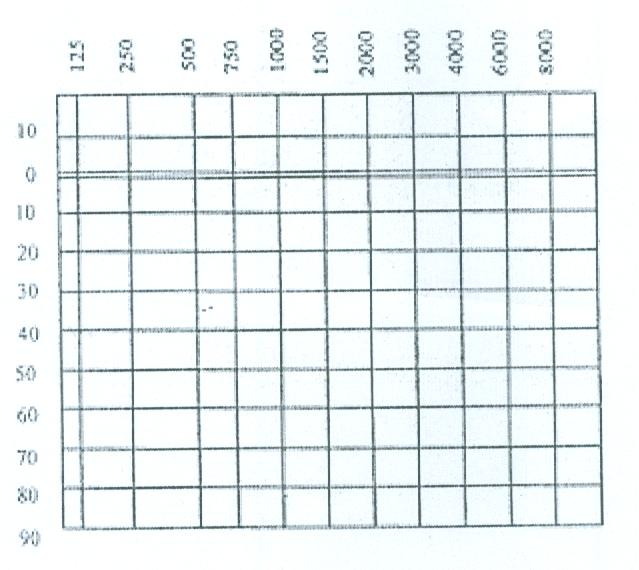
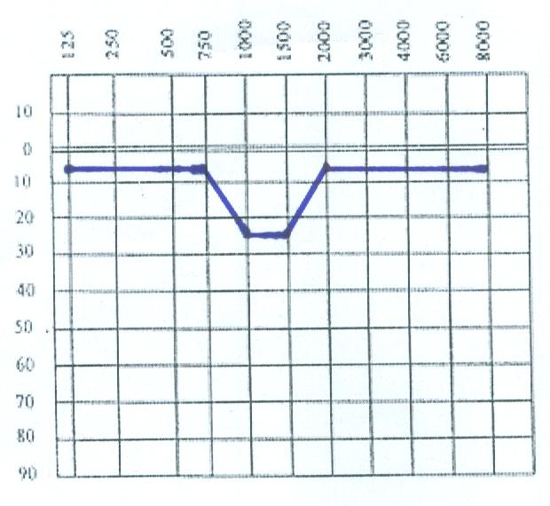

1) 베라르 AIT 청각검사의 중요성
청각검사에는 여러 종류가 있지만 대부분의 청각검사는 난청여부를 판단하는데 초점을 두고 있습니다. 난청여부의 판단에는 해당 주파수를 몇 데시벨 수준부터 들을 수 있는지에 초점을 두고 있어서, 청각이 지나치게 예민하여 나타나는 문제, 소리피치의 변별문제, 청각왜곡, 양쪽 청각의 심한 불균형, 편측성 청각문제에는 관심이 없으며, 이러한 청각문제를 바로 잡는 대책이 거의 없는 실정입니다.
베라르 AIT 청각검사에서는 일반 청각검사와 달리 청각과민, 청각왜곡, 음차변별, 편측성 청각문제 등의 청각이상에 초점을 두고 이러한 문제를 바로잡기 위한 목적으로 실시됩니다.
2) 검사환경
방음실이 아닌 조용한 방에서 실시하면 됩니다. 지나치게 조용한 방음실은 외부 소리는 들리지 않지만 자신의 몸속에서 나는 소리가 들림으로서 오히려 방해가 될 수 있습니다.
3) 검사 소리수준(Hz, dB)
청각검사에서 사용하는 주파수는 목적에 따라 다를 수 있습니다 .
일반적으로 이비인후과에서 난청자들에게 실시하는 검사 주파수는 6개(250, 500, 1,000, 2,000, 4,000, 8,000Hz)입니다. 베라르 AIT를 위한 청각검사의 주파수는 11개로 일반검사보다 훨씬 많습니다.
(1) 베라르 청각검사 11개 주파수(Hz):
125, 500, 750, 1,000, 2,000, 1500, 2000, 3,000, 4,000, 6,000, 8,000Hz
(2) 베라르 청각검사 데시벨(dB) 범위:
-10dB ~ 90dB(100dB)
4) 베라르 청각검사지 양식
베라르 AIT 표준 검사양식에는 11개 주파수와 -10부터 90dB까지 표시할 수 있도록 만들어져 있습니다. <그림 1> 베라르 청각검사지 참조

<그림 1> 베라르 청각검사지
5) 청력도의 이해
베라르 청각검사 결과, 각 주파수별 청력역치(들을 수 있는 가장 작은 소리)를 근거로 청각검사지에 표시하여 청력도를 그려보면 아래의 <그림 2> 청력도 예시와 같습니다.

<그림 2> 청력도 예시
위 <그림 2> 청력도 예시를 살펴보면,
10dB 크기의 소리를 들려주면, 이 대상자는 1,000Hz, 1,500Hz를 제외한 모든 주파수의 소리를 들을 수 있습니다(1,000Hz, 1,500Hz는 들을 수 없습니다).
그러나 30dB 크기의 소리를 들려주면 1,000Hz, 1,500Hz의 소리도 들을 수는 있으나 다른 주파수에서 보다 약하게 들을 수 있습니다.
6) 청각 검사시기
베라르 AIT에서 청각 검사는 AIT이전, AIT 중간, AIT완료 후에 실시합니다.
(1) AIT 이전 청각검사
청각의 형태를 점검하고, 필터여부를 결정하는 근거가 됩니다.
(2) AIT 중간 청각검사
AIT 전반기 동안의 변화를 점검하고, 새로운 필터가 필요한지 여부를 결정합니다. 청각의 형태에 따라 중간 청각검사의 결과와 무관하게 전반기에 설정한 필터로 끝까지 계속해야 하는 경우도 있습니다.
(3) AIT 이후 청각검사
AIT과정을 모두 완료한 후에 청각검사를 하여서 AIT로 인한 청각의 변화를 점검하기 위한 것입니다.
7) 청각검사 반응방식
아동과 검사자가 마주 앉아서 검사를 실시합니다. 아동은 제시된 소리에 대하여 들리는지 여부를 표현하면 됩니다. “들려요”, “안 들려요”, “예”, “아니오” 형식으로 반응하면 됩니다.
!--